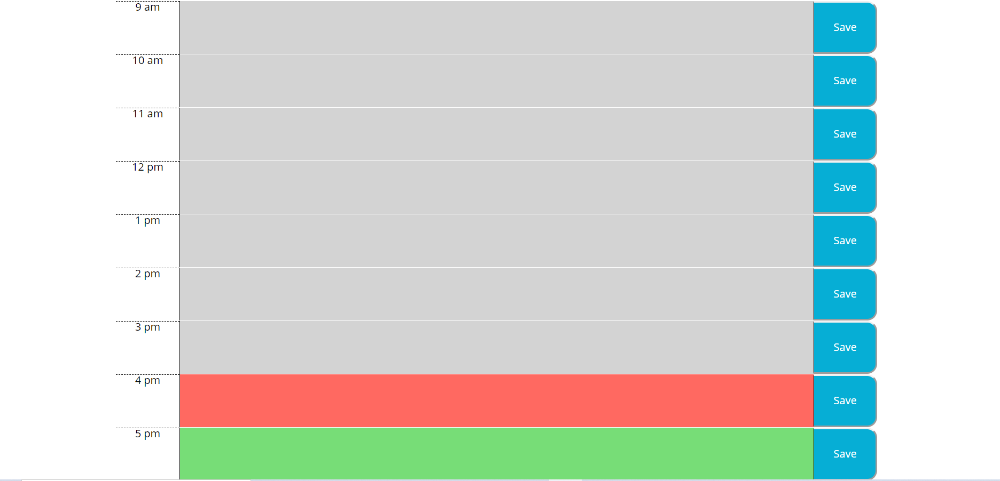
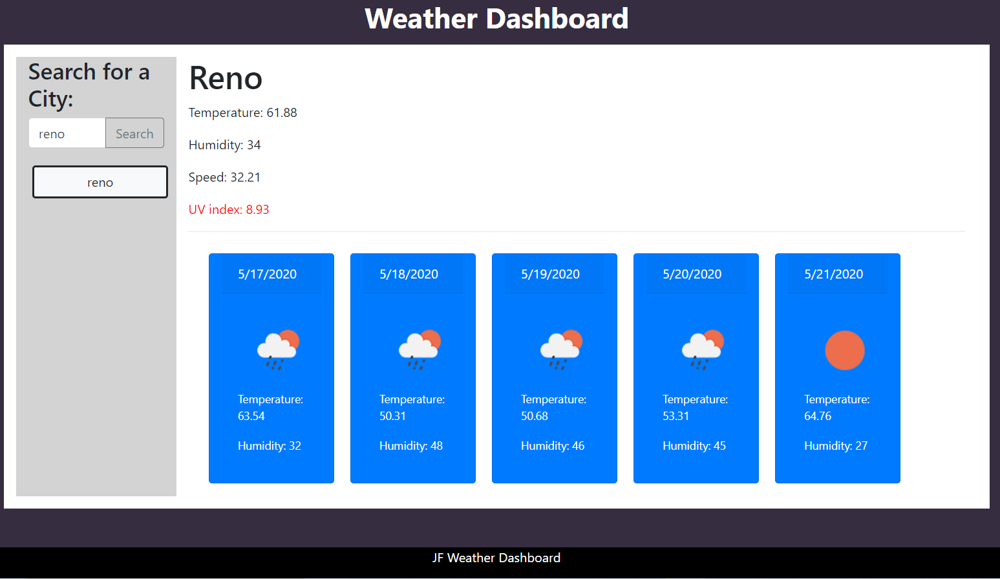

-

Lyrics To Go
This app uses api's to obtain information from a user search and display that information to the user, in a clean, concise manner. This project was my first collaborative effort with fellow developers completed using a Github repo. To use this app, please click the link:
Lyrics-To-Go -

Day Planner
The app pictured to the left is a day planner created using jquery and javascript. This app was completed using moment.js to help the planner account for the current time. The user can see what the current date and time is, and enter an event into any time slot for that day. That event is then saved using local storage. Please click the following link to use the application:
Day Planner -

Weather Dashboard
Using the weather dashboard app, the user can search a city for the current weather, as well as the 5 day forecast. This app makes two GET requests to a weather api to obtain this information. Once a city is searched, the app will save that search as a button below the original search field. To view the weather for that city again, the user simply needs to click the button that was created. The weather app can be found using the following link:
Weather Dashboard